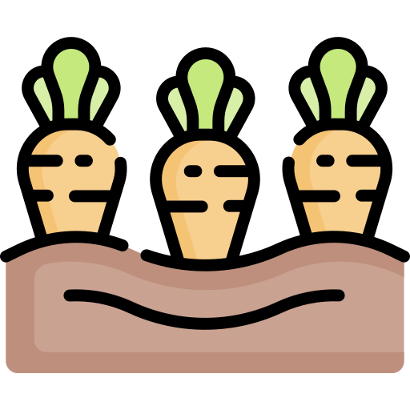

Ketika Anda mendesain halaman web dengan CSS, Anda harus mulai berpikir dalam hal kotak.
Setiap elemen diperlakukan seolah-olah menghasilkan kotak baru. Setiap kotak dapat memiliki aturan baru yang terkait dengannya.
Seperti yang Anda lihat dari diagram di atas, setiap kotak memiliki border. Antara konten dan perbatasan Anda dapat memiliki padding, dan di luar perbatasan Anda dapat memiliki margin untuk memisahkan kotak ini dari kotak disebelahnya.